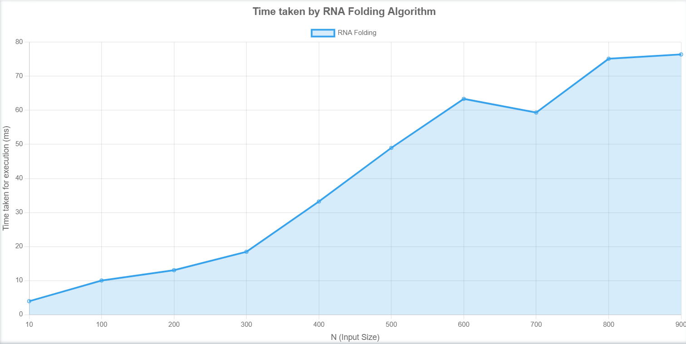

\[ OPT(i, j) = \max(OPT(i, j - 1), \max(1 + OPT(i, t - 1) + OPT(t + 1, j - 1))) \]
1. Base Case: The base case for the recurrence relation is when ( i ≥ j-4 ). In this case, OPT(i, j) = 0 because it's not possible to form a valid secondary structure with fewer than 4 bases.
2. Recursive Case: For ( i < j-4 ), we need to consider two options:
3. Choose the Maximum: Finally, we choose the maximum between Option 1 and Option 2 to obtain the optimal solution for the sub-problem OPT(i, j).
The time complexity of solving this recurrence relation depends on the number of sub-problems we need to compute. Since each sub-problem OPT(i, j) depends on sub-problems OPT(i, j-1) and OPT(i, t-1) for some t < j - 4, and each sub-problem is computed only once, the total number of sub-problems is O(n^2) , where n is the length of the input sequence and evaluating the recurrence in each takes O(n) time.
Therefore, the running time of this algorithm is O(n^3).

We have successfully implemented the required algorithm and have formed an efficient code to find the optimal pairings in the RNA Secondary Structure.